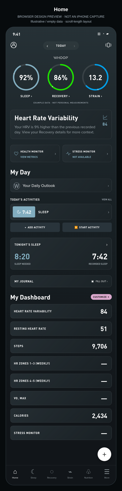
01 home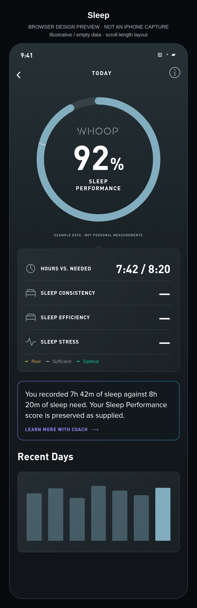
02 sleep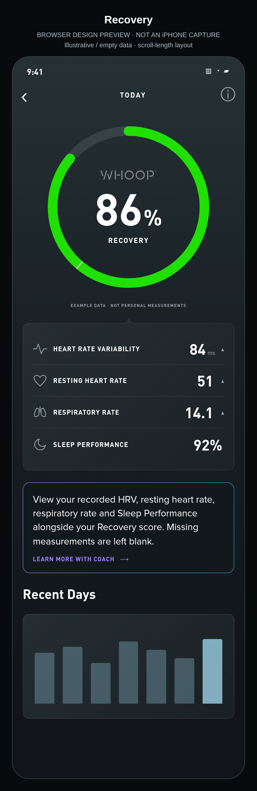
03 recovery 04 strain
04 strain 05 health
05 health 06 stress
06 stress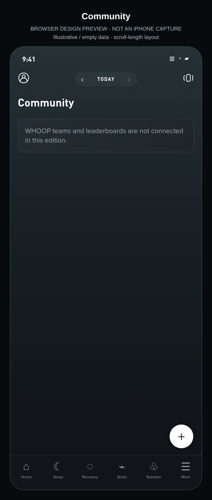
07 community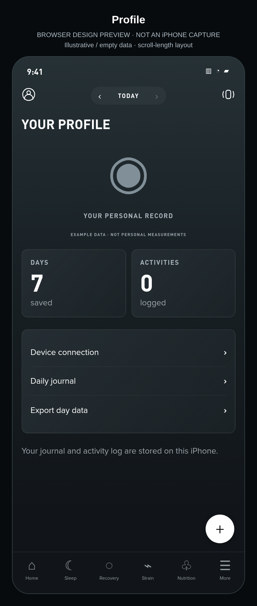
08 profile 09 more
09 more 10 journal
10 journal 11 add activity
11 add activity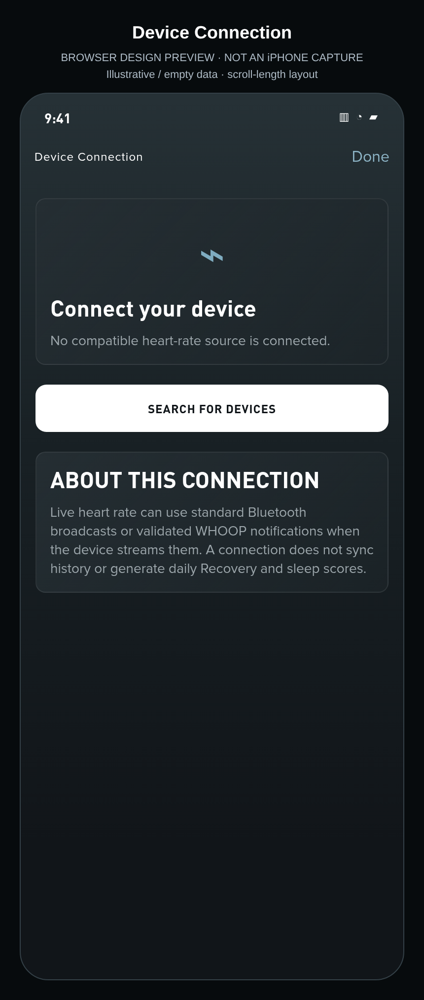
12 device 13 workout
13 workout 14 activities
14 activities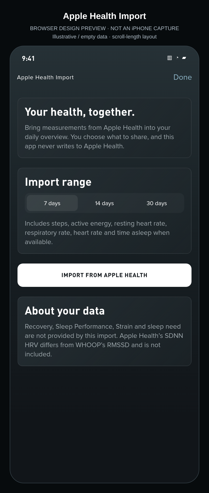
15 health import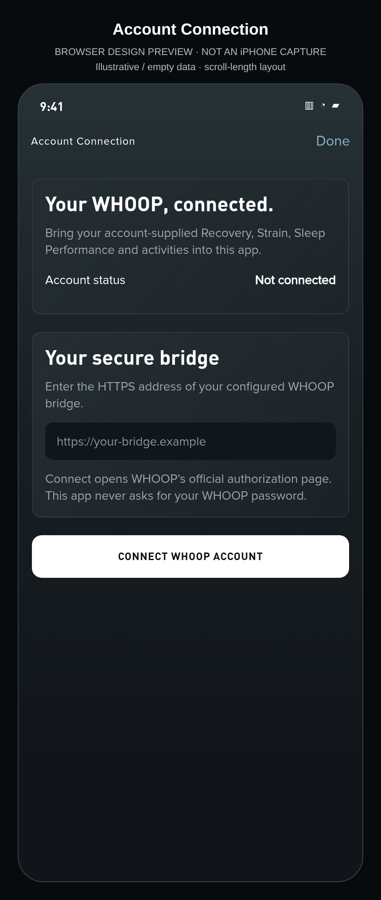
16 account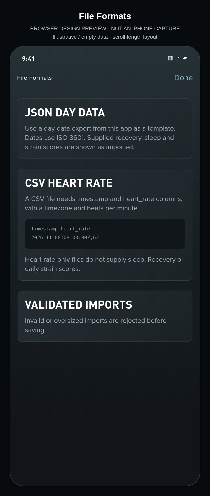
17 file formats 18 strain reference
18 strain reference 19 about
19 about 20 food text
20 food text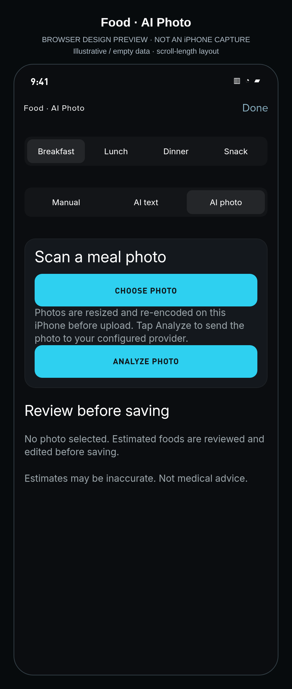
21 food photo 22 nutrition activity
22 nutrition activity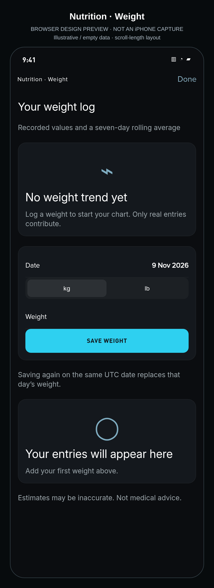
23 weight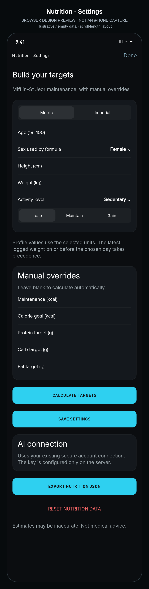
24 nutrition settings 25 local edition
25 local edition 26 live camera
26 live camera 27 live photo
27 live photo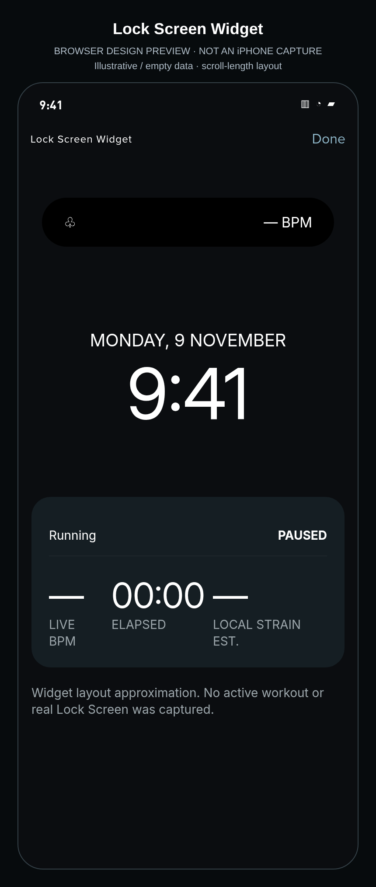
28 live widget 29 nutrition home
29 nutrition home 30 nutrition calories
30 nutrition calories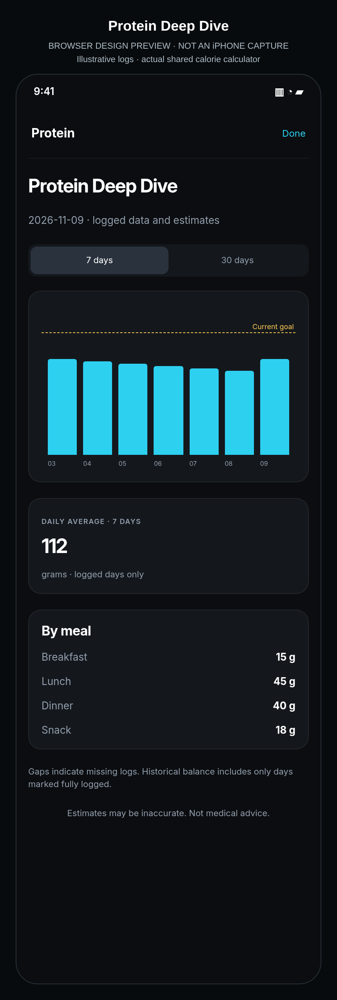
31 nutrition protein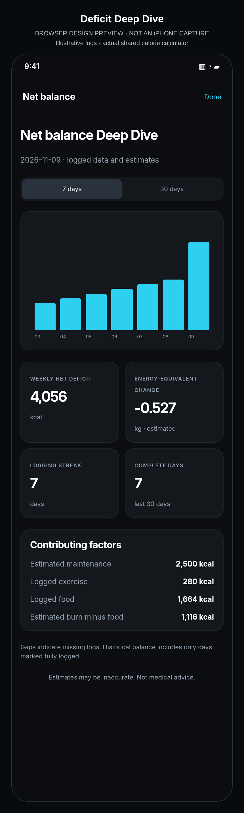
32 nutrition deficit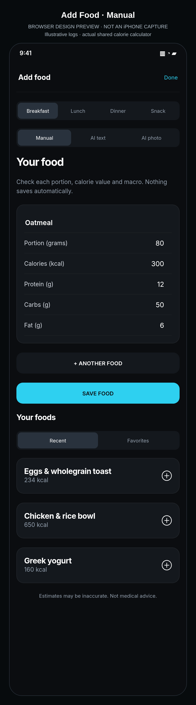
33 nutrition add